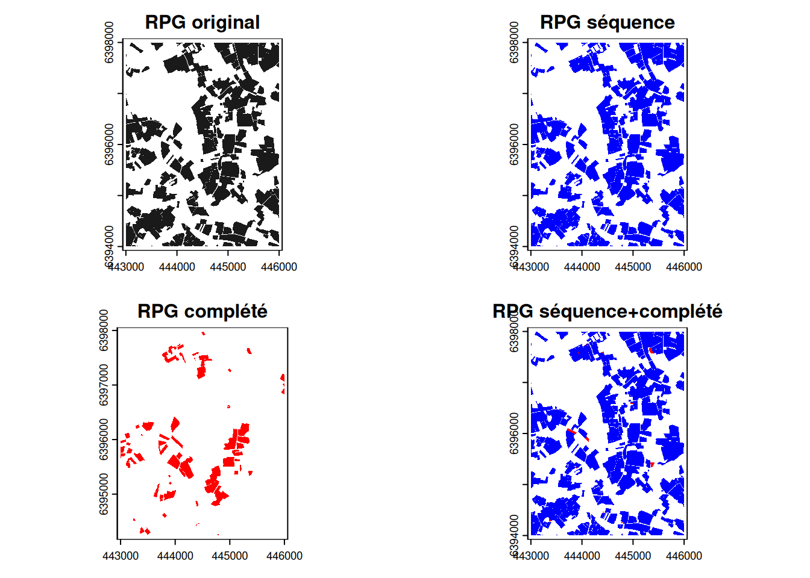
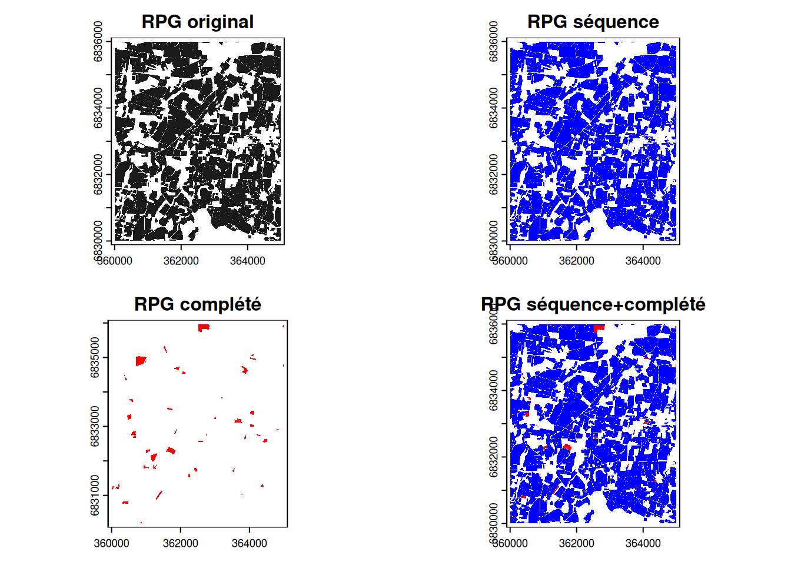
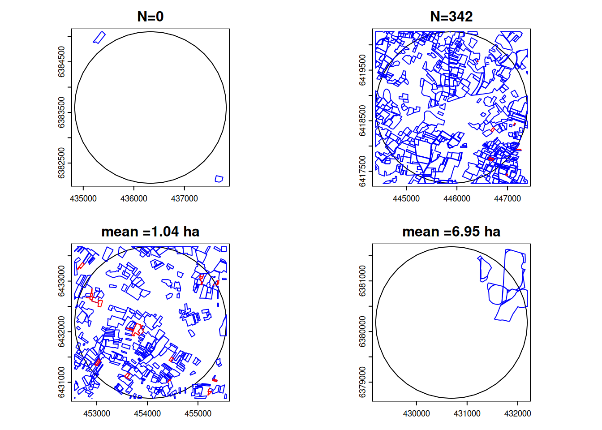
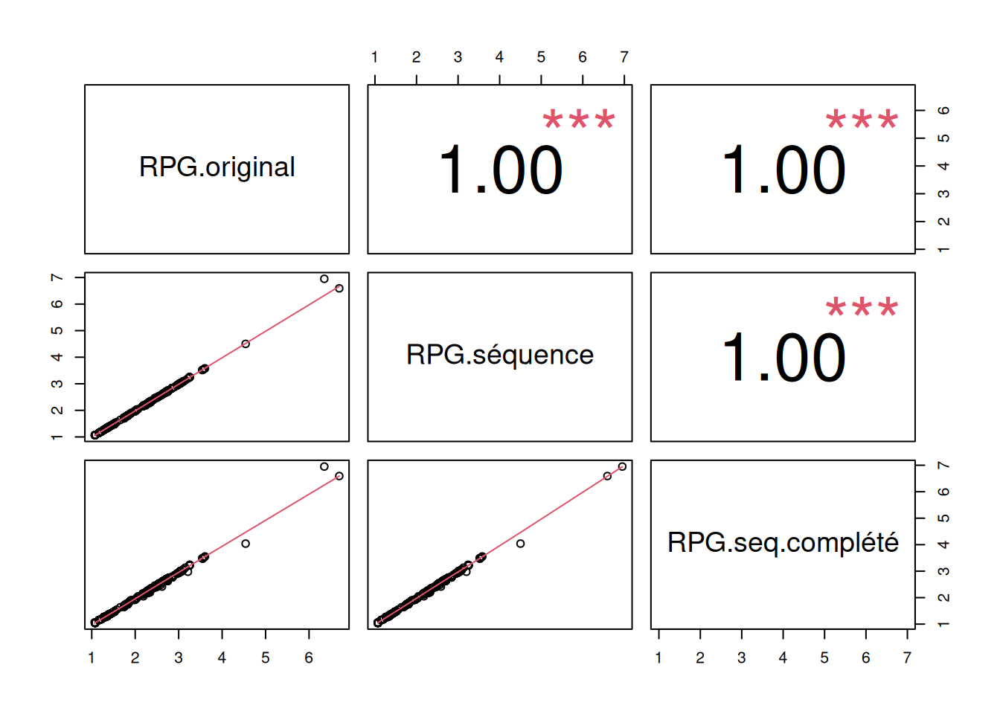
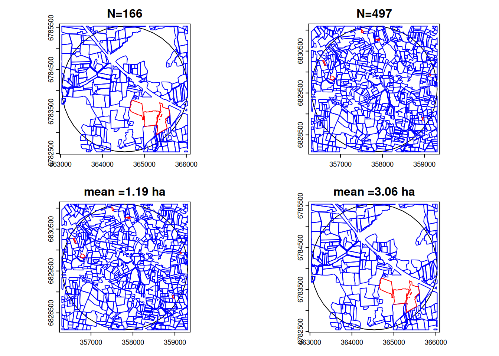
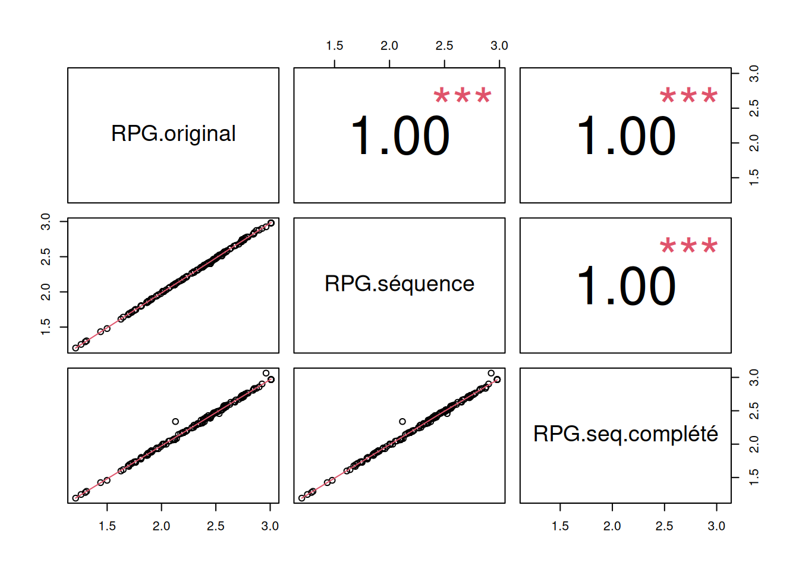

| N | Min. | 1st Qu. | Median | Mean | 3rd Qu. | Max. | |
|---|---|---|---|---|---|---|---|
| d33 | 81218 | 0 | 0.405 | 1.008 | 2.519 | 2.497 | 369.426 |
| d35 | 215372 | 0 | 0.403 | 1.237 | 2.032 | 2.739 | 582.106 |
Exploration de la taille des parcelles
Objectif
L’objectif de ce document est d’explorer comment évaluer la distribution de la taille des parcelles autour des sites d’échantillonnage en comparant les jeux de données RPG original, RPG séquence de cultures et RPG completé.
Les comparaisons sont réalisées sur l’année 2019, sur les sites d’échantillonnage de Gironde (d33, N=338) et d’Ille-et-Vilaine (d35 N=227), en utilisant une taille de buffer de 1500m.
Présentation des jeux de données
RPG original
Les données sont disponibles par région et par année sur le portail IGN. Le RPG est disponible sur la période 2007-2023 mais les données au niveau de la parcelle sont cohérentes seulement sur la période 2015-2023.
Téléchargement à la main (R53: 394Mb, R75: 701Mb), puis selection des parcelles par département (d33: 41Mb, d35: 119Mb).
RPG séquence de culture
Les séquences de cultures sur la période 2015-2023 sont disponibles par département (d35 : 260Mb, d33 : 97Mb).
Les sous-parcelles ont été agrégées (terra::aggregate()) pour l’année 2019 selon l’identifiant de parcelle parcel2019 (d35 : 154 Mb, d33: 50Mb).
Girault, Baptiste; Martin, Philippe, 2025, “Séquences de culture, France, 2015-2023”, https://doi.org/10.57745/VMYCYM, Recherche Data Gouv, V2
| N | Min. | 1st Qu. | Median | Mean | 3rd Qu. | Max. | |
|---|---|---|---|---|---|---|---|
| d33 | 81293 | 0 | 0.397 | 1.000 | 2.501 | 2.478 | 369.200 |
| d35 | 215539 | 0 | 0.395 | 1.228 | 2.018 | 2.722 | 582.106 |
RPG complété
Le RPG complété est disponible sur la période 2016-2022 par département (d35 : 182Mb, d33 : 172Mb).
Pour le RPG complété, il n’y a pas d’identifiant de parcelle. Les sous-parcelles ont été agrégées spatialement (uniquement si elles se touchent) pour l’année 2019 selon le type de culture rpg19_cult (d35 : 14Mb Mb, d33: 8Mb).
Cantelaube, Pierre; Lardot, Benjamin, 2024, “RPG complété 2022 Région Nouvelle-Aquitaine”, https://doi.org/10.57745/6FNRWO, Recherche Data Gouv, V5 (d33: 47Mb compressed, 171Mb extracted)
| N | Min. | 1st Qu. | Median | Mean | 3rd Qu. | Max. | |
|---|---|---|---|---|---|---|---|
| d33 | 7847 | 0 | 0.234 | 0.620 | 1.283 | 1.493 | 61.337 |
| d35 | 5740 | 0 | 0.241 | 0.558 | 1.054 | 1.195 | 68.888 |
RPG séquence + complété
Il y a beaucoup de chevauchements entre les parcelles issues du RPG et celles du RPG complété. Pour ne pas ajouter de petites bandes de terrain le long de parcelles RPG, les parcelles du RPG complété avec un chevauchement de plus de 75% de leur surface sur le RPG ont été écartées. Pour les autres parcelles, seule la différence spatiale entre les deux couches a été conservée.
| N | Min. | 1st Qu. | Median | Mean | 3rd Qu. | Max. | |
|---|---|---|---|---|---|---|---|
| d33 | 82749 | 0 | 0.382 | 0.979 | 2.464 | 2.433 | 369.200 |
| d35 | 217905 | 0 | 0.390 | 1.214 | 2.006 | 2.702 | 582.106 |
Visualization


Intersection avec les buffer à 1500m
Gironde (33)
| Min. | 1st Qu. | Median | Mean | 3rd Qu. | Max. | |
|---|---|---|---|---|---|---|
| RPG original | 0 | 141.75 | 189 | 179.426 | 211.5 | 338 |
| RPG séquence | 0 | 141.75 | 189 | 179.240 | 211.5 | 337 |
| RPG seq+complété | 0 | 150.00 | 191 | 182.657 | 213.0 | 342 |
| Min. | 1st Qu. | Median | Mean | 3rd Qu. | Max. | NA’s | |
|---|---|---|---|---|---|---|---|
| RPG original | 1.067 | 1.400 | 1.986 | 2.115 | 2.717 | 6.695 | 4 |
| RPG séquence | 1.066 | 1.386 | 1.964 | 2.098 | 2.701 | 6.951 | 4 |
| RPG seq+complété | 1.044 | 1.366 | 1.918 | 2.069 | 2.640 | 6.951 | 4 |


Quelque soit la source de données, le nombre et la taille des parcelles dans les buffer de 1500m sont très similaire. En moyenne en Gironde, il y a 180 parcelles de 2 ha dans une rayon de 1500m autour des sites d’échantillonage. L’ajout du RPG complété tend logiquement à augmenter le nombre de parcelles et diminuer leur taille moyenne (mais la différence est minime).
Ille-et-Vilaine (35)
| Min. | 1st Qu. | Median | Mean | 3rd Qu. | Max. | |
|---|---|---|---|---|---|---|
| RPG original | 163 | 248.5 | 268 | 276.189 | 301 | 491 |
| RPG séquence | 163 | 247.0 | 267 | 275.670 | 301 | 491 |
| RPG seq+complété | 166 | 248.0 | 269 | 277.978 | 303 | 497 |
| Min. | 1st Qu. | Median | Mean | 3rd Qu. | Max. | |
|---|---|---|---|---|---|---|
| RPG original | 1.210 | 2.016 | 2.383 | 2.323 | 2.574 | 3.008 |
| RPG séquence | 1.202 | 2.007 | 2.360 | 2.305 | 2.557 | 2.979 |
| RPG seq+complété | 1.191 | 1.998 | 2.360 | 2.297 | 2.566 | 3.064 |


En moyenne en Ille-et-Vilaine, il y a 268 parcelles de 2.3 ha dans une rayon de 1500m autour des sites d’échantillonage. L’ajout du RPG complété augmente très faiblement le nombre de parcelles et diminue leur taille moyenne mais la différence est minime.
Résumé
La distribution de la taille des parcelles autour des sites d’échantillonnage n’est pas sensible à la source des données. Voici un petit récapitulatif des points forts des différents jeux de données:
RPG original
- données originales fournies par l’IGN, sans pré-traitement
- possibilité de calculer aussi les périmètres des parcelles
RPG séquence
- données facilitant l’accès à la séquence de culture mais demandant une étape supplémentaire d’aggrégation des sous-parcelles par année
- les aires des parcelles et la couverture spatiale sont similaires à celle du RPG original
- pas de possibilité de calculer le périmètre des parcelles (à cause de l’étape d’aggrégation des sous-parcelles)
RPG séquence + completé
- le RPG complété permet d’avoir une meilleure couverture spatiale
- beaucoup de chevauchement avec le RPG et peu de parcelles supplémentaires, ce qui a un effet négligeable sur les indicateurs
- la definition des parcelles est moins homogène avec l’ajout de parcelles plus petites
- le couplage des deux jeux de données est une étape assez lourde en temps de calcul
À DISCUTER / DECIDER:
Quelle source de données utiliser pour calculer la taille des parcelles autour des sites d’échantillonnage?